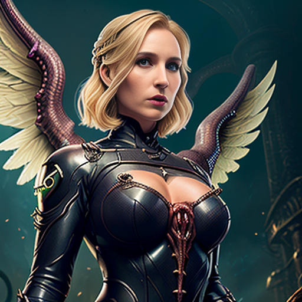

Персонажи
Ангела Циглер (Мёрси)
Талантливый врач, блестящий ученый, который коснулся запретной магии
Перейти к истории
Оливия Коломар (Сомбра)

Знает все секреты как манипулировать сознанием людей и разных существ
Перейти к истории